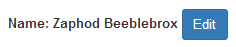

Custom Input directive is dedicated to enhance user experience for input data. It turns the input element into read-only
element with a button "Edit" to switch it into edit mode. In edit mode input has two buttons to save and cancel changes.

Directive Usage
To use custom input directive add <asmt-custom-input></asmt-custom-input> tag to your HMTL markup
Properties:
ng-model - to bind value that will be shown in input
save - to bind callback that will be invoked on save button click
Changes in Project
start.bat - grunt command call added to build application before server start
packages.json - new packages are added to build application
Grunt.js - configuration of build
The build script can be enhanced so that it creates folder with content that should be deployed. Index.html page should contain only minified versions of scripts and styles, so developer version of index.html should be created.
assessmentApp.js - main module and main controller definitions
services folder - contains module for services and definitions of services in application
directives folder - contains module for directives and definitions of directives in application. Each directive is placed in sub folder with its template and styles.
tests folder - contains set of tests for the application. Test can be run via "grunt jasmin:unit" command or via SpecRunner.html